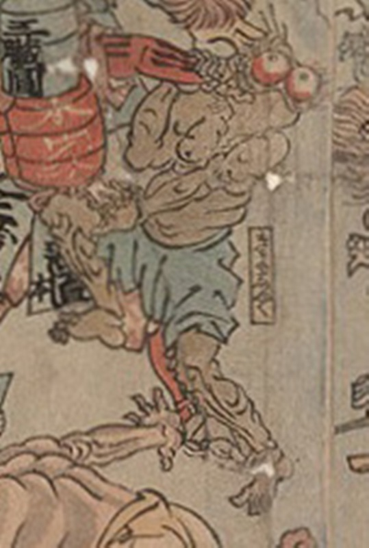

病気；ビョウキ，疫神；エキシン，虚弱；キョジャク

虚弱が擬人化した化物。甲冑を着けた薬の化物に頭を押され、それに抗っている。肌はどす黒く、青い腰巻のみを着けている。突き出た両目は丸く赤い。
著作者：歌川芳虎／出典：親書誌：U426_nichibunken_0012：諸病諸薬の戦い；ショビョウショヤクノタタカイ／日付：2006／資源識別子：U426_nichibunken_0012_0008_0000
Copyright (c)2010- International Research Center for Japanese Studies, Kyoto, Japan. All rights reserved.